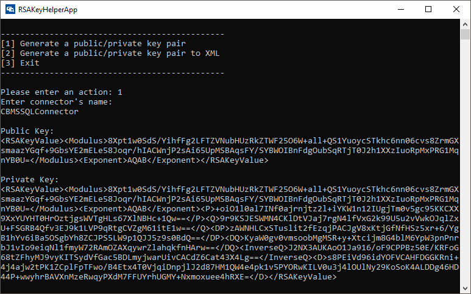

Implementing ConnectorProperties.cs
Creating the new class
If you have choosen to create your connector solution using Visual Studio Project Template, you can skip this step.
Start by creating a new Properties class. You need to implement one method from the ConnectorProperties class using the CB.Connector library. A reference to this library is required in your class.
using CB.Connector.Property;
Implementing the GetKey() method
If you have choosen to create your connector solution using Visual Studio Project Template, you can skip this step.
First implement the GetKey() method. This returns the private RSA key used to encrypt and decrypt data with the RSA algorithm.
To generate a private/public RSA key pair, do the following:
Download the RSAKeyHelperApp.exe.
Double-click RSAKeyHelperApp.exe to open Command Prompt window.

Defining properties
The next step is to define the properties required to interact with your specific data source.
Specify authentication type
There are several options available for user authentication in custom connectors. It is important for you to understand these options. The following are the options for configuring user authentication:
- OAuth 2.0 Authentication (see IOAuth2Configuration.cs reference)
- Basic Authentication (see IBasicAuthConfiguration.cs reference)
- No Authentication
Create the properties definition
After you apply the ConnectorPropertyAttribute, you can begin to define the specifics of your attribute. The following code example describes this process:
//No authentication public class Properties : ConnectorProperties<Properties> { //Apply the ConnectorPropertyAttribute [ConnectorProperty( Key = "ConnectionString", Name = "ConnectionString", Description = "A string that specifies information about a data source and the means of connecting to it.", Flags = ConnectorPropertyFlags.None, IsEncrypted = false )] public string ConnectionString { get; set; } protected override string GetKey() { //In case your connector has no encrypted property. return string.Empty; } }